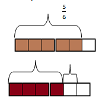

Lesson 37: Solving Word Problems Involving Addition or Subtraction of Fractions
 Explore and Discover!
Explore and Discover!
Explore and Discover!
Marlon painted his poultry hous using 5/6 liter of green paint and 2/3 liter of yellow paint. What color of paint was used more than the other? How much more of it was used than the other?
You can solve the problem by using the following steps.
Understand
• Know what is asked: The paint color that was used moe and by how much more.
• Know the given facts: 5/6 liter of green paint and 2/3 liter of yellow paint
Plan
• Draw a picture:
• Identify the operation to use: Subtraction
• Write the number sentence: 5/6 - 2/3 = n
Solve
• Solution: 5/6 - 2/3 = 5/6 - 4/6 = 1/6
• Answer: More green paint was used; by 1/6 liter